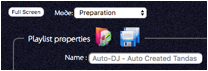

Playlists are simply lists of Tandas. You can decide whether to create them completely from scratch adding one Tanda at a time or you can have the system generate tandas for you or you can have the system use your previously created tandas for you to put a list together. In the latter case you can also ask the system to not re-use recently played ones or ones that feature in other playlists etc.
A playlist has a sequence of styles of music. Typically this might be Tango-Tango-Waltz-Tango-Tango-Milonga and repeat but there is no restriction on this. You can even specify that you want just Milonga and engage the Auto-DJ to create hundreds of possible Milonga Tandas from your collection for you. Listen to them and possibly save some for later.
Playlists created from rules can be saved either as the rules or as the resultant playlist of tandas.
If you add a tanda to a playlist and then for whatever reason decide to remove a song from it or add another song etc. this does not affect the original Tanda – only the one in the playlist.
After an event you can decide to save the playlist or simply switch off and forget it.

Clicking on the folder with a CD opens a list of your previously saved playlists and provides options to create some new ones.
The playlists listed are shown in reverse date order so that the most recently modified one is at the top.
The Tandas column shows either a simple count if the list was saved as the tandas but if the playlist was saved as the rules instead then the tandas column shows the rules in a summarized form.
The search and filter field in the top left is a simple search on your playlists both by their name and the date last saved. Therefore if you include the word “Class” for example in your playlists you use to teach then you can easily find them just be starting to type “Class”. The list reduces to matching playlists as you type. Erase characters again to remove the filtering or simply close and re-open the window.
Opening a rule based playlist again will cause the system to create a brand new playlist from those same rules. This is particularly handy if you regularly play an event such as on a Friday night. You can have a playlist that automatically uses your own tandas but excludes the ones you have played in the say the last 10 days. Thus unless your dancers have particularly good memories this will create new playlists for them each week with no immediate need for the DJ to plan anything. Obviously once the evening is under way the playlist can be modified to whatever needs the DJ has.
Note that Auto-DJ tandas may not contain all the songs requested. This is usually because the songs it picked took the running time of the tanda over 10 minutes before the 3rd song was added or it was unable to find any more suitable songs and for whatever reason did not abandon the tanda in favour of another.